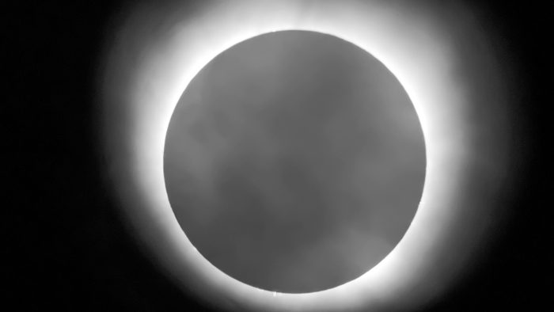
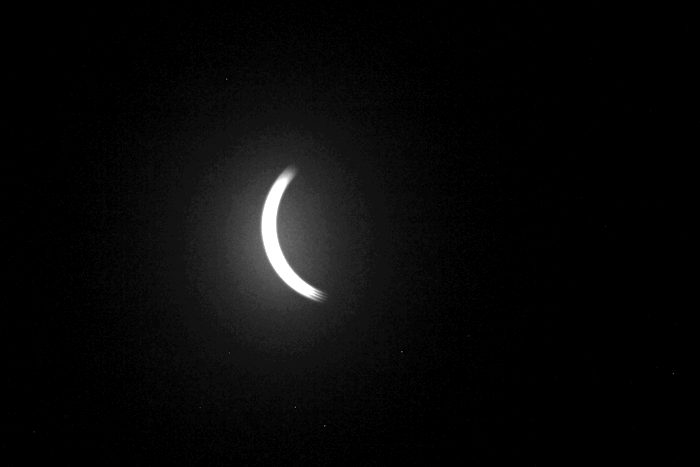
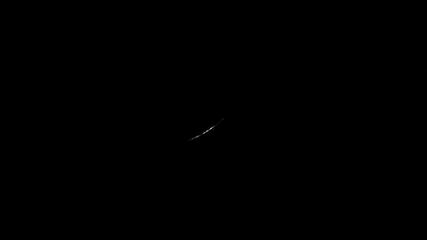
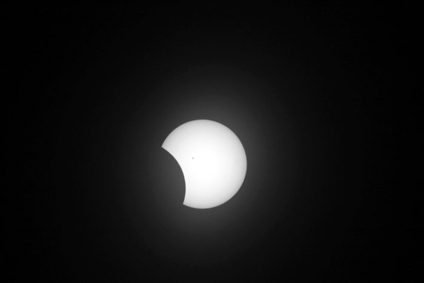
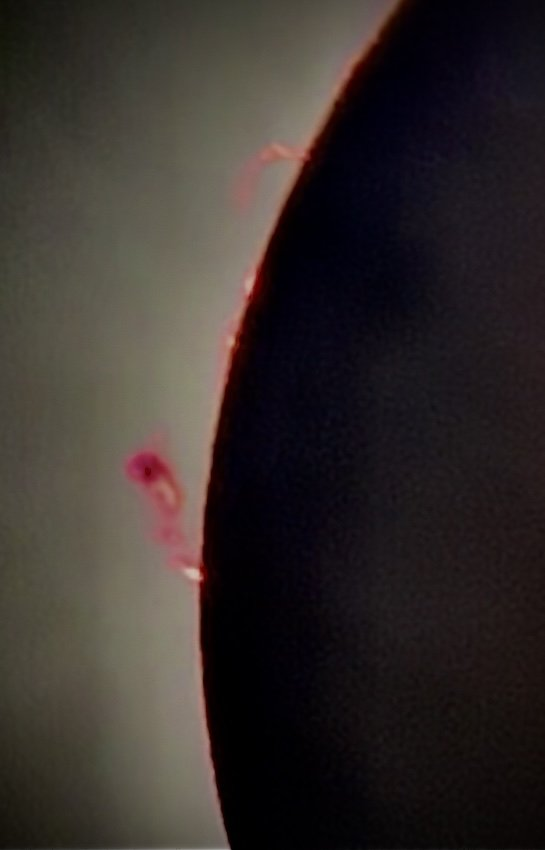

Una ventana que dura minutos
Cómo se diseñó un sitio que guarde lo que sienten las personas durante un eclipse total, con el ritmo del propio eclipse.
Gabriela Isabel Vera Garfias · Laboratorio de Física, Arte y Existencia (LFAE)

El reto
Un eclipse solar total dura unos minutos. Las personas que lo viven lo recuerdan toda la vida, pero casi nunca queda registro de lo que sintieron. Umbrhalia es un universo transmedia que intenta guardar eso: cuentos narrados por Ohr, un archivo de testimonios y experiencias en sala.
El sitio es la puerta de entrada. Tiene que hacer tres cosas en un teléfono y en menos de cinco minutos: explicar por qué existen los eclipses totales, invitar a escuchar a Ohr y pedir una sola palabra a quien vivió uno.
El eclipse como sistema de diseño
Las fases reales de un eclipse ordenan la interacción. Cada movimiento del sitio corresponde a una fase y significa algo: entrar es el primer contacto, avanzar es el creciente, la palabra que queda es la totalidad. Nada se desvanece: todo se descubre, como el Sol detrás de la Luna.




Secuencia de la expedición LFAE, convertida a blanco y negro para respetar la paleta.
Para quién
Cinco escenarios reales de llegada, no personajes inventados.
Llega por un sticker
Escanea un QR en una libreta o una computadora. Tiene un minuto y curiosidad. Es el perfil principal.
Vivió un eclipse
Quiere contar lo que sintió. El riesgo es pedirle demasiado antes de su palabra.
Todavía no ha visto uno
Es la mayoría. Deja una palabra de antes y queda esperando el 2 de agosto de 2027.
Jurado o financiadora
Necesita ver qué existe, qué es prototipo y qué se financia.
Persona ciega o con baja visión
Llega con lector de pantalla. Todo lo que se ve tiene que poder oírse y hacerse con teclado.
El recorrido central
Del QR a la totalidad. Solo la palabra es obligatoria; lo demás se puede saltar.
- QRSticker
- P5¿Has visto un eclipse?
- P6Una palabra
- P7Cuál y dónde (opcional)
- P8Tus reglas
- P9Totalidad: tu palabra quedó
Solo círculos, discos y anillos: en los esquemas de Umbrhalia no hay cuadrados ni triángulos. El rojo aparece una vez, en el momento de contacto.
Lo que prometíamos y lo que el sitio hacía
Antes de dibujar, se contrastó el flujo escrito con el código publicado. Estos fueron los hallazgos principales y lo que se cambió el 26 de octubre.
HALLAZGOLos cuentos aparecían con cuatro cifras distintas: 7, 8, 10.
HOYDiez cuentos en tres arcos, en el índice y en cada lámina.
HALLAZGOEl aviso decía «nada se envía a ningún servidor», pero el sitio cuenta visitas con Google Analytics.
HOYEl aviso dice exactamente qué se queda en el navegador y qué se cuenta.
HALLAZGO«Solo guardamos la ciudad», cuando el código guarda una zona de unos 10 km.
HOYEl texto dice lo que hace el código y permite seguir sin marcar nada.
HALLAZGOLa frase de la totalidad, leída sola, invitaba a mirar el Sol sin protección.
HOY«Solo dentro de la totalidad, y solo en su franja, se puede mirar sin filtro. Antes y después, nunca.»
HALLAZGO«Una palabra primero» no se cumple: la palabra es el paso 4 de 6.
SIGUEPasarla al paso 2 y medirlo en la prueba con personas antes de cambiar el orden.
Un solo color, y viene del cielo
La interfaz vive en totalidad: el negro es la Luna y el blanco es la corona, que solo aparece donde hay algo que mirar o leer. El único color es el de las protuberancias, que en un eclipse total solo se ven unos minutos en el borde de la Luna.
Por eso el rojo marca un solo punto por pantalla: el contacto. Nunca decora, nunca va en botones ni en barras, y la información nunca depende solo de él.

El día se equivoca
El momento central del sitio, cuando la palabra queda, reproduce lo que pasa en el paisaje durante la totalidad: la luz baja y todo se calla. Estas dos fotos son del mismo lugar con minutos de diferencia.


Timelapse de la expedición LFAE, Ojuela, Durango.
Ohr cambia de forma
Ohr narra los cuentos. No tiene género ni forma fija: en cada cuento toma la forma de la estructura que se cuenta, y lo que lo hace reconocible es la huella de un círculo de trazo constante y el rojo. En el sitio, cada cuento es una lámina con su forma de Ohr, su texto, su audio propio y su ficha científica.
Origen y expansión del universo
Seis cuentos, del Big Bang al Sistema Solar. Eje vertical.
La coincidencia cósmica
La zona habitable, la Luna y la distancia: por qué el Sol y la Luna caben uno en el otro. Eje horizontal.
Efímera conexión
El origen de Umbrhalia, en Tlemcen, 1079. Descenso en diagonal; el vacío es la ventana.
Lo que sigue
Prueba con personas
- Tareas: dejar una palabra desde un QR, encontrar su eclipse, escuchar un cuento.
- Comparar la palabra en el paso 2 contra el paso 4.
- Incluir personas que usan lector de pantalla.
Después de la entrega
- La coincidencia con la secuencia real de fotos.
- Modo sala para talleres con tableta compartida.
- Las láminas de los diez cuentos con su audio.
Lo que se financia
- El archivo compartido, con moderación.
- La voz de Ohr como pieza sonora.
- La itinerancia hacia el 2 de agosto de 2027.